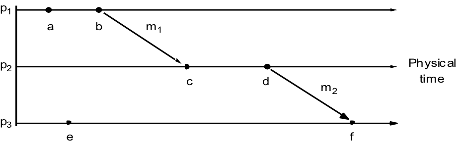
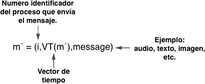
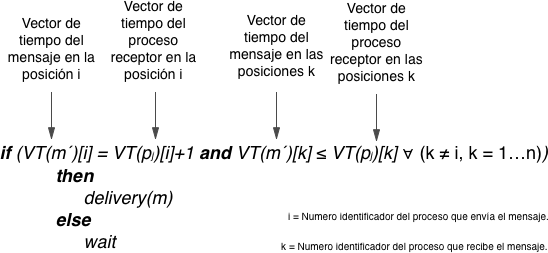

La entrega por ordenamiento causal está basada en la relación de precedencia causal
definida por Lamport (Leslie, 1978). La relación causal, denotada por , es definida por
las siguientes tres reglas:
- Si dos eventos ocurrieron en el mismo proceso pi (i = 1, 2, …, N)
entonces ocurrieron en el orden observado por pi,
- Cuando un mensaje, m es enviado entre dos procesos, entonces el envío de
m sucede antes del recibo de m,
- La relación es transitiva.
a → b (en p1)
c → d (en p2)
b → c debido a
m1
d → f debido a
m2

La entrega causal se representa de la siguiente manera:
Si send(m)→send(m'),then ∀ k∈c: deliveryk (m)→
deliveryk (m')
Esto asegura que si él envió de un mensaje m precede causalmente al envió de un
mensaje m', en un grupo c, entonces la entrega de m también precede
causalmente a la entrega de m' para todo proceso k que pertenece a
c.
El siguiente algoritmo propuesto por Birman (Kenneth, 1991) lleva a cabo la entrega en
orden causal:
- Inicialmente, el vector de tiempo de cada proceso se iguala con 0 en cada una de sus
posiciones.
- Para cada evento envío(m) de un proceso (pi).
- Se incrementa una unidad del vector de tiempo del proceso emisor
(pi) en la posición correspondiente del mismo (i).
- Cada mensaje enviado por el proceso emisor (pi) es enviado
con un vector de tiempo actualizado [VT(pi)]. La
estructura de un mensaje es la siguiente:

- Para cada evento de recepción(m') en los procesos receptores (pj),
se evalúa la siguiente condición:

- Para cada evento de entrega(m'), el proceso receptor (pj) modifica
su vector de tiempo de la siguiente manera: